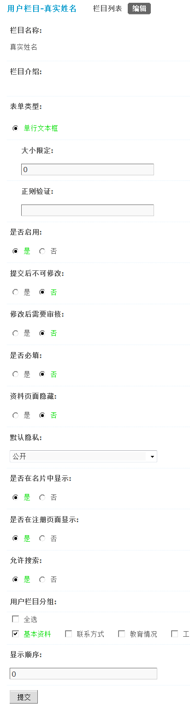

4.6. 用户栏目¶
用户栏目
在产品提供的现有用户资料项目不能满足站长需求时，站长可以通过用户栏目为用户扩展更多的自定义资料项目。系统自带了 35 项用户扩展资料和 8 项自定义字段。增加或隐藏用户扩展资料以及修改自定义字段都可以扩充现有的用户资料，完全不用考虑不够用的情况。
从 Discuz! X2 开始，我们就增加了用户栏目分组的功能，一般情况下网站定位不同、网站类型不同时，所需的用户资料肯定是不同的。
比如一个校园网站在运营中可能不需要“工作情况”及“工作情况”标签下的毕业学校及学历这两个用户栏目。那该怎么办呢？只好硬着头皮修改代码了！
找文件、找文件......
看代码、看代码......
调试、刷新、清缓存......
头晕眼花了，这对我们的这些不懂代码的菜鸟站长来说绝对是一种“煎熬”。太令人头痛了！不想改代码怎么办呢？现在只需要在后台轻松设置一下就可以完全实现您的需求。
下面我们从用户栏目的使用开始一一为大家讲解。
操作路径：【后台】=>【用户】=>【用户栏目】
一、系统默认用户扩展资料项
用户栏目列表中列出了当前系统中所有的用户栏目
列表中的用户栏目分为两类：系统内置字段和自定义字段。系统内置字段不可以修改它的栏目名称和栏目介绍，自定义字段则可以进行修改，两个类型的用户栏目中的其他设置均可以进行修改。
点击某一项用户栏目后面的“编辑”，进入用户栏目的设置界面，如下图所示：
图中以“真实姓名”用户栏目为例。
真实姓名的栏目名称和栏目介绍不可以修改，由此可以看出他是一个系统内置字段。
表单类型：这里默认为单行文本框，可以设置大小限定及正则表达式。
所谓大小限定即限制输入的字符数，如果输入的名字大于这里的字符限制，将不被提交。
正则表达式在填写的时候一定要慎重，建议对正则不了解的站长朋友不要修改此项。
是否启用：设置为“是”，用户才可以填写此项内容。
提交后不可修改：设置为“是”，用户在第一次填写好此内容后，将不可以再次修改。
修改后需要审核：设置为“是”，则用户在每次更新此字段后均会提交给管理员进行人工审核，在审核期间仍可以对此内容进行重新编辑，来修改提交给管理员审核的内容，在管理员通过此内容前，用户的个人资料将不会被更新。
是否必填：设置为“是”，则在用户提交个人资料时必须填写此项内容。
资料页面隐藏：设置为“是”，则该项内容在个人资料页面不显示。
默认隐私：可以选择公开、好友可见或者保密。如果选择公开，那么所有会员均可看到该项内容，选择好友可见，只有加为好友的用户才可以看到该项内容，设置为保密则只有自己可见。
是否在名片中显示：设置为“是”，该项内容将在会员的名片中显示
是否在注册页面显示：设置为“是”，则在用户注册的时候会显示此项内容。
允许搜索：设置为“是”，则此项用户资料会出现前台“查找好友”的“高级方式查找”页面内。
用户栏目分组：默认有5个分组，可以选择该项内容的分组。分组后将在前台个人资料的相应分组项目下显示，可以设置一个或者多个分组，比如我们这里选择基本资料，那么在前台显示效果如下：
显示顺序：设置的值越大在此项用户资料的排列越靠后。
二、自定义字段
对于自定义字段1~自定义字段8，8个自定义字段，是允许修改其栏目名称和栏目介绍的。
表单类型：表示该字段的类型，分为单行文本框、多行文本框、单选框、复选框、下拉菜单、多选列表框、上传图片，共7种。
单行文本框、多行文本框会提供如下图所示的设定项：
我们已经在上面介绍过这两项的具体涵义。
单选框、下拉菜单会提供如下图所示的设定项：
可选值：每行输入一个作为选项的值。
复选框、多选列表框会提供如下图所示的设定项：

大小限定：最多可填写的字符数或最多可选择的项数。
可选值：每行输入一个作为选项的值。
上传图片：此项在前台的显示效果如下
大小限定：限制了上传图片的大小(单位:KB)
可以直接上传图片。
三、栏目分组
可以随意调整用户资料项目名称、根据您的运营需求随意组合用户栏目。
系统默认共五个分组，可以在栏目分组名称下直接修改适合自己站点的栏目分组名。
同时也可以直接隐藏不想显示的栏目分组。
点击栏目分组名称后面的编辑链接即可对该分组进行编辑
栏目分组名称：可直接修改这里的名称，修改后在前面个人资料设置页的显示效果如下：
显示：选择“否”将不显示该分组。
显示顺序：数字越大，显示越靠后。
可选的资料项：可以选择该分组下已经启用的资料下，勾选后将在这个分组下显示。比如我们在这里选择了真实姓名、性别、生日、出生地、情感状态、交友目的、血型、自我介绍、身份证正面图，那么在前台的显示效果如下：
同时点击可选资料项后台的（点此启用新资料项）可以直接跳转到栏目列表中，启用更多的资料项。